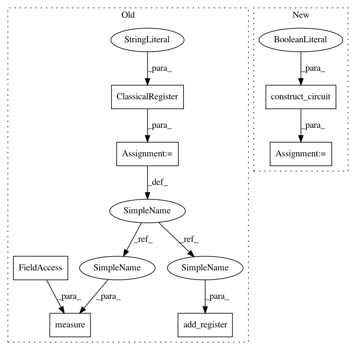

419c5228433c57eda6b324780369c03039781e95,qiskit/aqua/algorithms/single_sample/qpe/qpe.py,QPE,_compute_energy,#QPE#,190
Before Change
top_measurement_label = np.binary_repr(max_amplitude_idx, self._num_ancillae)[::-1]
else:
from qiskit import ClassicalRegister
c_ancilla = ClassicalRegister(self._num_ancillae, name="ca")
qc.add_register(c_ancilla)
qc.barrier(self._phase_estimation_circuit.ancillary_register)
qc.measure(self._phase_estimation_circuit.ancillary_register, c_ancilla)
result = self._quantum_instance.execute(qc)
ancilla_counts = result.get_counts(qc)
top_measurement_label = sorted([(ancilla_counts[k], k) for k in ancilla_counts])[::-1][0][-1][::-1]
After Change
def _compute_energy(self):
if self._quantum_instance.is_statevector:
qc = self.construct_circuit(measurement=False)
result = self._quantum_instance.execute(qc)
complete_state_vec = result.get_statevector(qc)
ancilla_density_mat = get_subsystem_density_matrix(
complete_state_vec,
In pattern: SUPERPATTERN
Frequency: 4
Non-data size: 7
Instances
Project Name: Qiskit/qiskit-aqua
Commit Name: 419c5228433c57eda6b324780369c03039781e95
Time: 2019-04-30
Author: shaohan.hu@ibm.com
File Name: qiskit/aqua/algorithms/single_sample/qpe/qpe.py
Class Name: QPE
Method Name: _compute_energy
Project Name: Qiskit/qiskit-aqua
Commit Name: 80a45db18cab4f449d6f4e027f6fce6ca7133544
Time: 2019-04-30
Author: shaohan.hu@ibm.com
File Name: qiskit/aqua/algorithms/single_sample/shor/shor.py
Class Name: Shor
Method Name: _run
Project Name: Qiskit/qiskit-aqua
Commit Name: 179b564a13bf1d864e9b86af84e8973b25eba745
Time: 2019-04-30
Author: shaohan.hu@ibm.com
File Name: qiskit/aqua/algorithms/single_sample/grover/grover.py
Class Name: Grover
Method Name: _run_with_existing_iterations
Project Name: Qiskit/qiskit-aqua
Commit Name: f0cf18a70d896f74f70f24a9a53fa7db7201951a
Time: 2019-04-30
Author: shaohan.hu@ibm.com
File Name: qiskit/aqua/algorithms/single_sample/iterative_qpe/iqpe.py
Class Name: IQPE
Method Name: _estimate_phase_iteratively